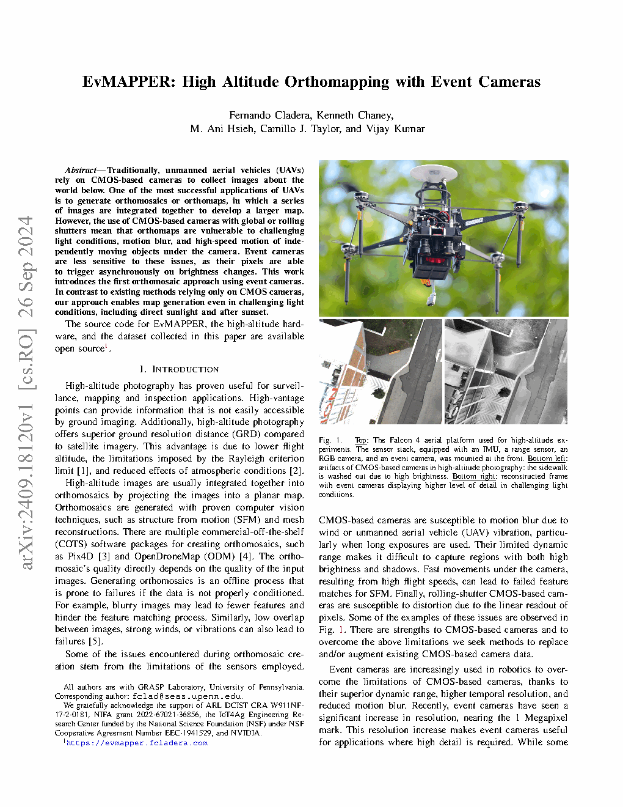
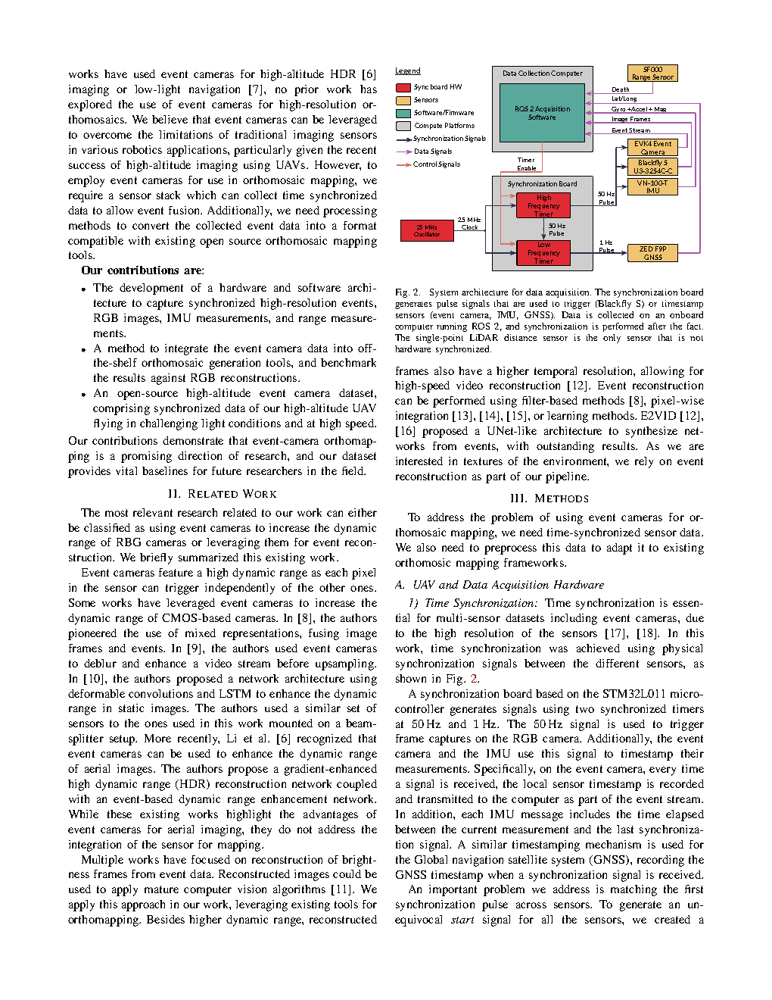
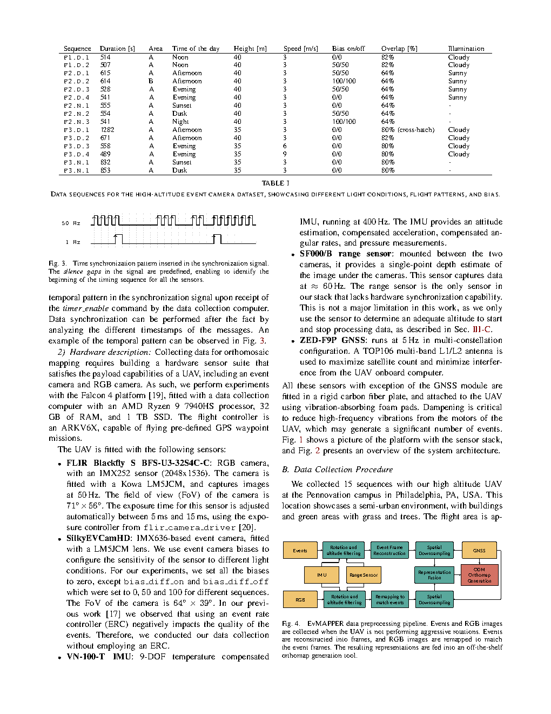
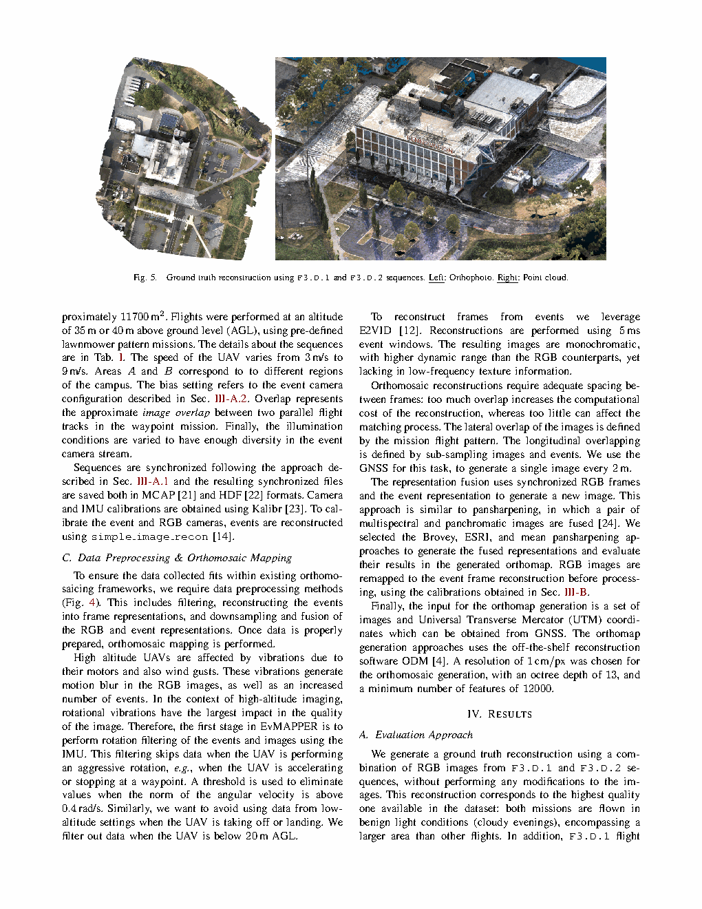
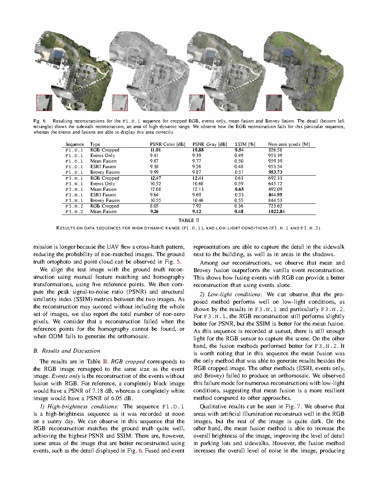

Fig. 7F3.N.2（黄昏）正射地图：RGB vs. mean fusion——低光下的亮度增强来源：论文 Fig. 7

图表解读
展示：黄昏对比。RGB（左）有大量暗区且丢失细节。Mean fusion（右）提高了整体亮度，显露出停车场和人行道。然而，融合引入了噪声伪影——亮度增强与噪声放大之间的根本性权衡。Mean fusion 是该序列中唯一成功的融合方法。
| 标题 | EvMAPPER: High Altitude Orthomapping with Event Cameras |
| 作者 | Fernando Cladera, Kenneth Chaney, M. Ani Hsieh, Camillo J. Taylor, Vijay Kumar |
| 单位 | University of Pennsylvania, GRASP Laboratory。通讯作者: fclad@seas.upenn.edu |
| 发表 | IEEE Robotics and Automation Letters (RA-L), 2025, arXiv:2409.18120 |
| DOI / 链接 | arXiv: 2409.18120 | 代码与数据集: evmapper.fcladera.com |
| TL;DR | 首个在 UAV 上使用事件相机进行正射镶嵌地图构建的方法。克服了高空摄影中 CMOS 相机的局限性（运动模糊、有限动态范围、卷帘快门伪影）。展示了在包括直射阳光和日落后等挑战性光照条件下的正射地图生成。Pipeline：同步硬件传感器堆栈 -> E2VID 事件重建 -> 与 RGB 的全色锐化融合 -> 现成 ODM。开源了硬件、软件以及一个 15 序列的高空事件相机数据集。 |
flowchart TB
subgraph SYNC["Synchronization Board STM32L011"]
OSC["25 MHz Oscillator"] --> CLK["25 MHz Clock"]
CLK --> TIMERS["Two Synchronized Timers"]
TIMERS --> P50["50 Hz Pulse"]
TIMERS --> P1["1 Hz Pulse"]
P50 --> PAT["Temporal Pattern for Start-of-Sequence ID"]
end
subgraph SENSORS["Sensor Suite on Falcon 4"]
EV["SilkyEVCamHD Event Camera
IMX636 · 64x39 FoV"]
RGB["FLIR Blackfly S RGB
IMX252 · 2048x1536 · 50Hz"]
IMU["VN-100-T IMU
400Hz · 9-DOF"]
RNG["SF000/B Range Sensor
60Hz"]
GPS["ZED-F9P GNSS
5Hz · Multi-constellation"]
end
subgraph ONBOARD["Onboard AMD Ryzen 9 7940HS"]
ROS["ROS 2 Acquisition"]
STORE["MCAP + HDF5 Storage"]
end
P50 --> EV
P50 --> RGB
P50 --> IMU
P1 --> GPS
EV --> ROS --> STORE
RGB --> ROS
IMU --> ROS
RNG --> ROS
GPS --> ROS
classDef sync fill:#f0ebfd,stroke:#8b5cf6,stroke-width:2px,color:#6d28d9
classDef sensor fill:#e8f0fe,stroke:#3b82f6,stroke-width:2px,color:#1d4ed8
classDef compute fill:#e6f7ee,stroke:#10b981,stroke-width:2px,color:#047857
class OSC,CLK,TIMERS,P50,P1,PAT sync
class EV,RGB,IMU,RNG,GPS sensor
class ROS,STORE compute
flowchart TB
subgraph RAW["Raw Sensor Data"]
EVENTS["Event Stream
asynchronous"]
RGB_RAW["RGB Images
50Hz"]
IMU_DATA["IMU
400Hz"]
GNSS_DATA["GNSS
5Hz"]
end
subgraph FILTER["Pre-filtering"]
ROT["Rotation filter:
skip when |omega| > 0.4 rad/s"]
ALT["Altitude filter:
skip when alt < 20m AGL"]
end
subgraph RECON["Event Processing"]
E2VID["E2VID Reconstruction
5ms event windows"]
EV_FRAMES["Monochrome Event Frames
High DR, reduced texture"]
end
subgraph RGB_PROC["RGB Processing"]
REMAP["Remap to match event FOV
using camera calibrations"]
RGB_CROP["Cropped RGB Frames"]
end
subgraph FUSE["Pansharpening Fusion"]
BROV["Brovey Transform"]
ESRI["ESRI Fusion"]
MEAN["Mean Fusion"]
FUSED["Fused Representations
Spatial detail + Color"]
end
subgraph DOWNSAMPLE["Spatial Downsampling"]
GNSS_SEL["Select 1 image every 2m
using GNSS positions"]
FINAL["Final Image Set
+ UTM Coordinates"]
end
subgraph ORTHO["Orthomosaic Generation"]
ODM["OpenDroneMap (ODM)
1 cm/px · octree depth 13
min features 12000"]
MAP["Final Orthomosaic Map"]
end
EVENTS --> ROT --> ALT --> E2VID --> EV_FRAMES
RGB_RAW --> ROT --> ALT --> REMAP --> RGB_CROP
EV_FRAMES --> BROV --> FUSED
RGB_CROP --> BROV
EV_FRAMES --> ESRI --> FUSED
RGB_CROP --> ESRI
EV_FRAMES --> MEAN --> FUSED
RGB_CROP --> MEAN
FUSED --> GNSS_SEL --> FINAL --> ODM --> MAP
GNSS_DATA --> GNSS_SEL
classDef raw fill:#fef7ed,stroke:#f59e0b,stroke-width:2px
classDef filt fill:#e8f0fe,stroke:#3b82f6,stroke-width:2px
classDef recon fill:#f0ebfd,stroke:#8b5cf6,stroke-width:2px
classDef fuse fill:#e6f7ee,stroke:#10b981,stroke-width:2px
classDef ortho fill:#ffe4e6,stroke:#f43f5e,stroke-width:2px
class EVENTS,RGB_RAW,IMU_DATA,GNSS_DATA raw
class ROT,ALT filt
class E2VID,EV_FRAMES,REMAP,RGB_CROP recon
class BROV,ESRI,MEAN,FUSED,GNSS_SEL,FINAL fuse
class ODM,MAP ortho
| 类别 | 内容 | 规格 |
|---|---|---|
| 输入 | 同步的事件流、RGB 图像、IMU、测距、GNSS | 事件: IMX636; RGB: 2048x1536 @50Hz; IMU: 400Hz; GNSS: 5Hz |
| 输出 | 地理参考正射镶嵌图 | 1 cm/px, UTM 坐标, ~11,700 m^2 |
| 评估 | PSNR（彩色与灰度）、SSIM、非零像素数 | 以组合的阴天 RGB 序列生成的真值为基准 |
传感器融合建图任务：使用事件相机增强或替代 CMOS 相机进行高空 UAV 正射镶嵌建图。贡献是一个完整的硬件+软件 Pipeline，使事件相机数据与现有现成正射建图工具（ODM）兼容。这是首次证明基于事件的正射建图是可行的，并且在某些条件下（HDR 场景、低光照）能产生优于或补充 RGB-only 方法的结果。15 序列开源数据集为未来研究提供了基线。
| 先前方法 | 核心思想 | 为何在正射建图中失败 |
|---|---|---|
| 纯 CMOS 正射建图（Pix4D, ODM） | SFM + 从 RGB 图像的网格重建 | 在挑战性光照下失败：直射阳光使传感器饱和，阴影丢失纹理，低光增加噪声。风/振动引起的运动模糊减少特征匹配。 |
| 基于事件的 HDR 成像（Li et al. 2024） | 从事件中梯度增强 HDR 重建用于航拍图像 | 增强单张图像的动态范围，但未解决建图/正射镶嵌问题——无 SFM 或正射地图生成集成。 |
| 基于事件的夜间导航（Escudero et al. 2023） | 事件生成图像的互信息匹配用于定位 | 将事件用于导航/定位，而非高分辨率地图生成。完全不同的任务。 |
EvMAPPER Pipeline：(1) Falcon 4 UAV 上硬件同步数据采集 -> (2) 通过 IMU 进行旋转/高度过滤（跳过 |omega| > 0.4 rad/s 或高度 < 20m AGL）-> (3) 通过 E2VID 从事件重建帧（5ms 窗口）-> (4) RGB 重映射以匹配事件相机 FoV（使用预标定的外参）-> (5) 全色锐化融合（Brovey/ESRI/Mean）-> (6) 使用 GNSS 空间降采样至每 2m 1 张图像 -> (7) 现成 ODM 以 1 cm/px 生成正射镶嵌，octree 深度 13，最少 12000 特征。
| 序列 | 类型 | 条件 | PSNR 彩色 | PSNR 灰度 | SSIM |
|---|---|---|---|---|---|
| F1.D.1 | RGB Cropped | 中午，晴天 | 11.01 dB | 10.88 dB | 0.54 |
| F1.D.1 | Brovey Fusion | 中午，晴天 | 9.99 dB | 9.87 dB | 0.51 |
| F3.N.1 | RGB Cropped | 日落 | 12.47 dB | 12.41 dB | 0.63 |
| F3.N.1 | Mean Fusion | 日落 | 12.08 dB | 12.13 dB | 0.65 |
| F3.N.2 | RGB Cropped | 黄昏 | 8.05 dB | 7.92 dB | 0.36 |
| F3.N.2 | Mean Fusion | 黄昏 | 9.26 dB | 9.12 dB | 0.48 |
全色锐化起源于卫星成像：将高分辨率全色（灰度）图像与低分辨率多光谱图像融合，生成高分辨率彩色图像。在 EvMAPPER 中，事件重建作为"全色"波段（来自 HDR 事件的高空间细节，但是单色），RGB 图像提供颜色信息。三种方法代表了不同的权衡：

将截图保存为figures/fig1.png展示：（上）搭载传感器堆栈的 Falcon 4。（左下）CMOS 伪影：人行道因高亮度而过曝。（右下）事件相机重建在同一挑战性光照条件下显示更高细节。这张对比图本身就构成了整个工作的动机——事件相机保留了 CMOS 传感器因饱和而丢失的细节。

将截图保存为figures/fig2.png展示：完整硬件架构。同步板生成 50Hz（触发 RGB，为事件/IMU 加时间戳）和 1Hz（为 GNSS 加时间戳）脉冲。50Hz 信号中的时序模式实现了明确的起始序列识别。测距传感器是唯一非硬件同步的传感器（可接受——仅用于起飞/着陆高度过滤）。

将截图保存为figures/fig4.png展示：完整的预处理工作流。事件和 RGB 经过旋转/高度过滤 -> 事件通过 E2VID 重建 -> RGB 重映射以匹配事件 FoV -> 通过全色锐化融合 -> 空间降采样（每 2m 1 张图像）-> 输入 ODM。模块化设计允许每个组件独立改进。

将截图保存为figures/fig5.png展示：数据集中最高质量的重建——用作所有定量对比的真值。由两次重叠的阴天下午飞行（温和光照）以交叉模式生成，实现最大覆盖和最小未匹配图像概率。

将截图保存为figures/fig6.png展示：高亮度（中午）场景的细节对比。RGB 无法重建人行道（过曝）。纯事件和两种融合方法都正确显示了人行道细节。Mean 和 Brovey 融合优于纯事件重建，展示了 RGB+事件融合的收益。
展示：黄昏对比。RGB（左）有大量暗区且丢失细节。Mean fusion（右）提高了整体亮度，显露出停车场和人行道。然而，融合引入了噪声伪影——亮度增强与噪声放大之间的根本性权衡。Mean fusion 是该序列中唯一成功的融合方法。
| 问题 | 难度 | 严重性 |
|---|---|---|
| 事件相机 bias 设置 | Bias 差分 on/off（0, 50, 100）显著改变灵敏度。错误的 bias -> 事件过少（丢失纹理）或过多（带宽饱和）。没有自动选择。 | ***** |
| 振动敏感性 | 电机振动产生大量虚假事件。0.4 rad/s 过滤阈值丢弃数据，且可能无法完全抑制高频振动。 | **** |
| E2VID 窗口大小 | 5ms 窗口在时间分辨率和事件密度之间权衡。过短 -> 稀疏；过长 -> 重建中出现运动模糊。 | *** |
| RGB 自动曝光 | 自动曝光控制器动态调整 5-15ms——帧之间这种变化使与固定窗口事件重建的融合变得复杂。 | *** |
| 参考文献 | 重要性 |
|---|---|
| Rebecq et al. (2019) -- E2VID. IEEE TPAMI | Pipeline 中使用的事件到视频重建。UNet 用于从事件流合成强度帧。 |
| Li et al. (2024) -- ERS-HDRI. Remote Sensing | 最接近的先前工作：基于事件的航拍 HDR 成像，但无建图组件。 |
| Gallego et al. (2020) -- Event-based Vision: A Survey. IEEE TPAMI | 全面的事件相机综述——奠定本工作扩展到正射建图的格局。 |
| Chaney et al. (2023) -- M3ED. CVPR Workshops | 同实验室的多机器人多传感器事件数据集——与 EvMAPPER 共享硬件架构。 |